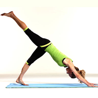

Leg Exercises

Begin on all fours on the ground.
Take a deep breath, release and push into downward dog by straightening the legs and lifting your hips and butt into the air.
Push your hands and feet into the ground and relax the head between your arms.
Exhale and lift one leg as high as you can while keeping it straight with a flexed foot.
Lower the leg down, and repeat on the other side.